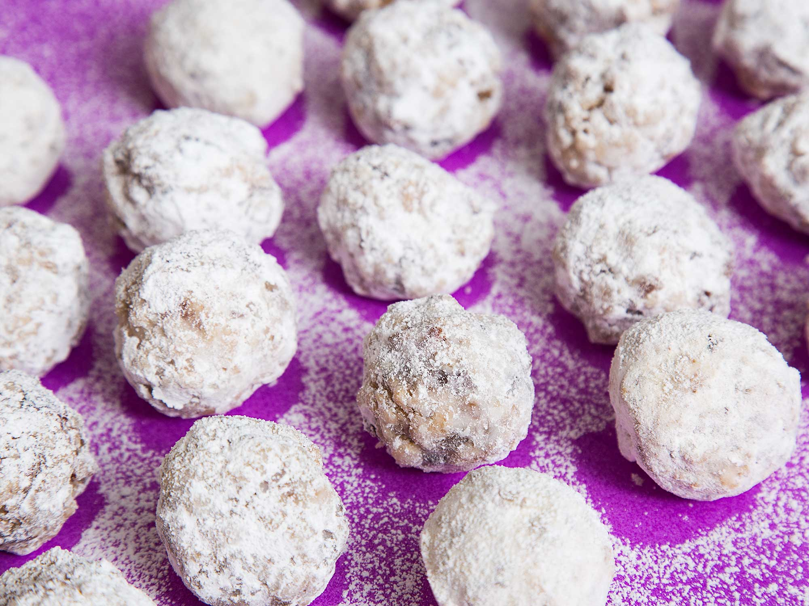

Granny's Date Balls

Date Balls
Meep Meep
Meep Meep christmas
Ingredients
- 1 cup white sugar
- 1/2 cup butter
- 1 cup chopped dates
- 1 tsp. Vanilla
- 1 egg
- 2 cups rice crispies
Cooking Instructions
- Cream butter, egg, and sugars together and then add dates. Cook in
a pot over low heat for 10 minutes and stir.
- Cool then add vanilla and rice crispies
- Roll into small balls (slightly smaller than a golf ball) the roll
in icing to sugar coat.
- Refrigerate or can be frozen.